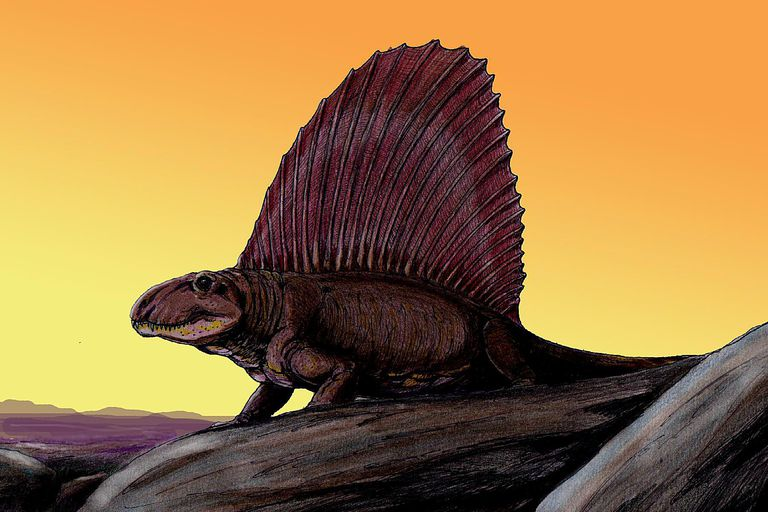
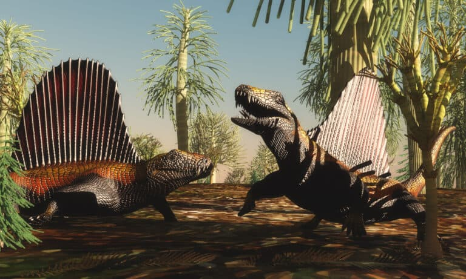
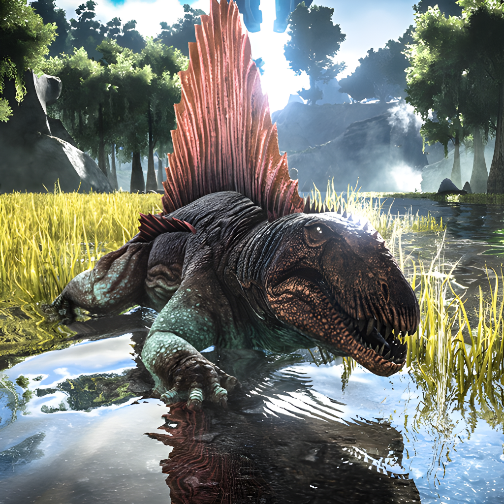
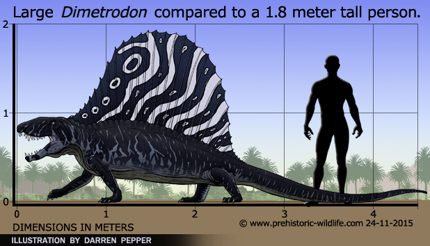
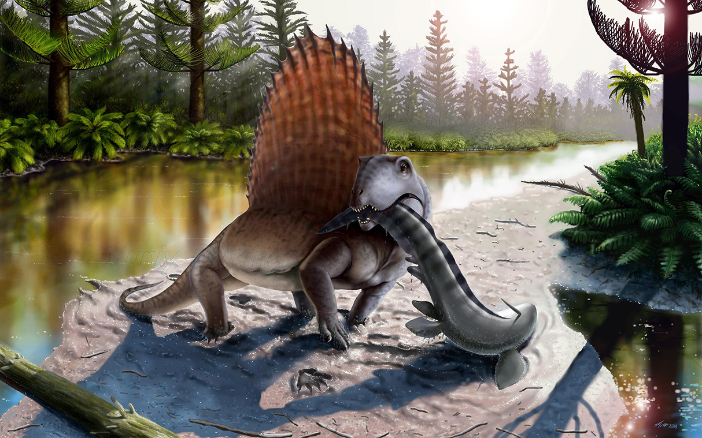
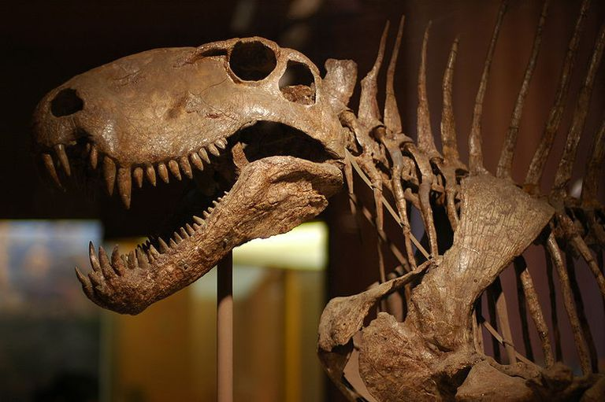
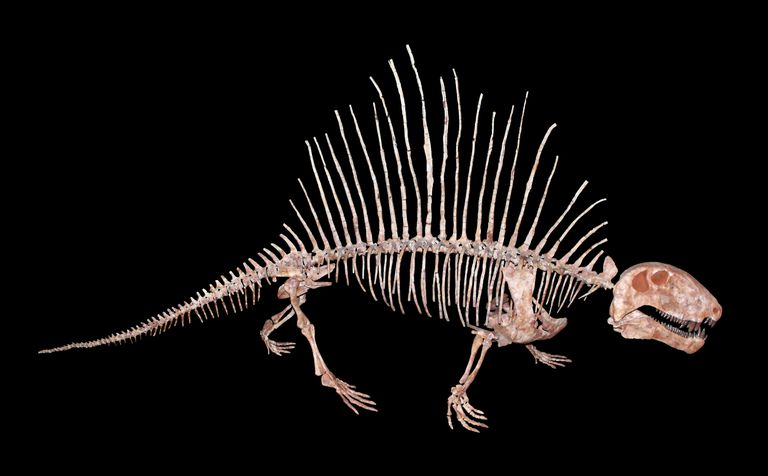

Dimetrodon
Bò Sát Lưỡng Nha kỷ Nhị Điệp
Tổng quan
Kỷ
Permi
Họ
Sphenacodontidae
Chi
Dimetrodon
Dài
4.5 m
Nặng
250 kg
Thức ăn


Dimetrodon là một loài động vật ăn thịt thuộc Nhánh Mặt thú. Nó sống vào đầu kỷ Permi. Nó là thành viên của họ Sphenacodontidae. Mặc dù nó thường bị nhầm với một con khủng long, nhưng Dimetrodon già hơn những con khủng long đầu tiên khoảng 40 triệu năm.
Nguồn: wikipedia.org
Phân bố
Khu vực Bắc Mỹ và Châu Âu
Thông tin thêm về Dimetrodon
Kỷ nguyên và phân bố
Dimetrodon sống trong thời kỳ Permi từ khoảng 295 triệu đến 265 triệu năm trước. Hóa thạch được tìm thấy ở nhiều địa điểm khác nhau trên khắp Bắc Mỹ, bao gồm Texas, Oklahoma, Nova Scotia và Canada. Tìm thấy cũng ở Đức và các nước châu Âu khác. Những khu vực này đại diện cho một khu vực được gọi là Euramerica trong kỷ Permi.
Các nhà khoa học tin rằng loài động vật này có thể thích nghi với nhiều môi trường sống, bao gồm vùng đất khô cằn, vùng đầm lầy, vùng cây bụi, vùng nước bùn và vùng thực vật. Tuy nhiên, hầu hết các hóa thạch được tìm thấy đều ở các hệ sinh thái vùng đất thấp có lẽ là vùng đất ngập nước trong kỷ Permi.
Tên khoa học
Dimetrodon - "Hai Cỡ Răng", tên tạm dịch là Bò Sát Lưỡng Nha (hoặc Bò Sát Tạp Nha), được đặt tên theo tên của nhà cổ sinh vật học Edward Drinker Cope nổi tiếng của Mỹ năm 1878 trong một bài báo cho Kỷ yếu của Hiệp hội Triết học Hoa Kỳ. Vì nó là loài động vật trên cạn đầu tiên có răng ziphodont với các cạnh có răng cưa khác nhau.
Kích thước
Kích thước Dimetrodon trung bình dao động trong khoảng từ 1.8 đến 3.5 mét, với trọng lượng ước tính khoảng 200 kg. Tuy nhiên, thành viên nổi bật nhất của chi này là D. Angelensis lớn hơn 4.5 mét một chút và nặng khoảng 250 kg. Dimetrodon là lưỡng hình giới tính, có nghĩa là con đực lớn hơn con cái.
Ngoại hình
Đặc điểm nổi bật nhất của Dimetrodon chắc chắn là cánh buồm lớn của nó. Cánh buồm nhô ra khỏi các đốt sống của nó và được hình thành bởi một gai thần kinh mở rộng được bao bọc bởi một màng gồm nhiều mạch máu. Các nhà khoa học tin rằng cánh buồm mang tính biểu tượng chủ yếu để điều chỉnh nhiệt độ. Các nhà nghiên cứu khác nghi ngờ điều này là đúng, vì Sphenacodon—một họ hàng gần của Dimetrodon cũng tồn tại trong thời kỳ Permi sớm—không có cánh buồm.

Các đặc điểm hộp sọ là một trong những đặc điểm nổi bật nhất giúp phân biệt Dimetrodon với hầu hết các loài sauropod sớm nhất. Dimetrodon có hộp sọ cao và nén sang hai bên. Con thú có những chiếc răng cửa giống như răng cửa, một chiếc răng nanh lớn với một hàng răng nhỏ hơn phía sau răng nanh. Răng và các lỗ sọ lớn phía sau mắt là công cụ giúp các nhà cổ sinh vật học hiểu và nhận biết loài vật này tốt hơn. Lỗ mở này là cửa sổ thái dương.
Chế độ ăn và săn mồi
Dimetrodon là loài ăn thịt và chủ yếu thích ăn cá và các loài lưỡng cư khác. Các nhà khoa học đã suy ra chế độ ăn kiêng này từ việc kiểm tra chéo và so sánh răng của ba loài Dimetrodon khác nhau. Sự khác biệt về kích thước và bộ răng được phát hiện có nghĩa là nó đã tiến hóa theo thời gian để săn những con mồi lớn hơn.
Con mồi thông thường của Dimetrodon đã phát triển thành kích thước lớn hơn theo thời gian vì có một số loài ăn thịt lớn phải tranh giành. Để theo kịp, Dimetrodon cũng phải lớn hơn để săn những con mồi lớn hơn trong hệ sinh thái của nó. Những chiếc răng nanh sắc nhọn ở phía trước mõm của nó rất phù hợp để đào những con mồi vừa mới bị giết. Răng ở phía sau chủ yếu dùng để cắt xương và mài các cơ cứng.
Khám phá
Bộ hóa thạch Dimetrodon đầu tiên được phát hiện vào những năm 1800. Công lao cho những khám phá sớm nhất là của Donald Mcleod, người sống ở thuộc địa của Anh trên Đảo Hoàng tử Edward vào năm 1845. Mcleod đã phục hồi một hàm trên mà ông đã bán cho John William Johnson, một nhà địa chất người Canada. Phát hiện đặc biệt này vào năm 1854 là hàm dưới của Bathygnathus borealis —một loài ăn thịt có họ hàng với Thecodontosaurus. Vào năm 2015, các nhà cổ sinh vật học hiện đại đã phân loại lại nó thành Dimetrodon. Đây cũng là hàm Dimetrodon có răng ziphodont đầu tiên được phát hiện ở Canada.
Mẫu vật đầu tiên của Dimetrodon có đuôi được tìm thấy ở Texas vào năm 1927. Hóa thạch được tìm thấy cho thấy phần đuôi chiếm một phần lớn trong tổng chiều dài cơ thể của loài vật này. Không có bằng chứng hóa thạch nào mô tả da của nó. Tuy nhiên, bằng chứng hóa thạch từ Ascendonanus cho thấy Dimetrodon có thể có vảy giống loài bò sát hiện đại.
